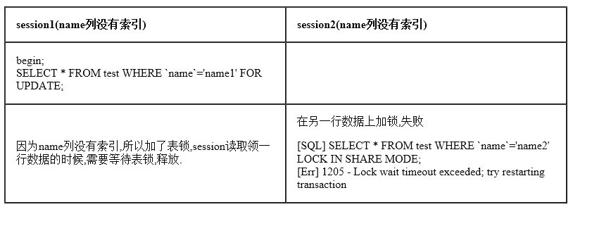
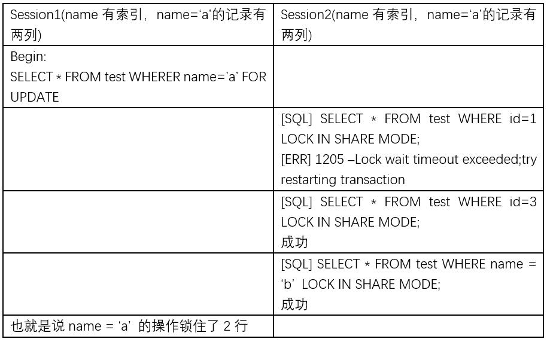

两段锁协议
两段锁协议是指每个事务的执行可以分为两个阶段：生长阶段（加锁阶段）和衰退阶段（解锁阶段）。
加锁阶段： 在该阶段可以进行加锁操作。在对任何数据进行读操作之前要申请并获得S锁，在进行写操作之前要申请并获得X锁。加锁不成功，则事务进入等待状态，直到加锁成功才继续执行。
解锁阶段： 当事务释放了一个封锁以后，事务进入解锁阶段，在该阶段只能进行解锁操作不能再进行加锁操作。
两段封锁法可以这样来实现：事务开始后就处于加锁阶段，一直到执行ROLLBACK和COMMIT之前都是加锁阶段。ROLLBACK和COMMIT使事务进入解锁阶段，即在ROLLBACK和COMMIT模块中DBMS释放所有封锁。
通俗来讲：就是说一个事务中必需先完成所有的加锁，然后才可以进行锁的释放。
可以证明，若并发执行的所有事务均遵守两段锁协议，则对这些事务的任何并发调度策略都是可串行化的。
如果事务是良构的且是两阶段的，那么任何一个合法的调度都是隔离的。
具体的数学推到过程可以参照 《事务处理:概念与技术》 这本书的 7.5.8.2节.
另外要注意两段锁协议和防止死锁的一次封锁法的异同之处。一次封锁法要求每个事务必须一次将所有要使用的数据全部加锁，否则就不能继续执行，因此一次封锁法遵守两段锁协议；但是两段锁协议并不要求事务必须一次将所有要使用的数据全部加锁，因此遵守两段锁协议的事务可能发生死锁。
锁粒度
表锁（table lock）
表锁是mysql最基本的锁策略，也是开销最小的锁，它会锁定整个表。
尽管存储引擎可以管理自己的锁，MySQL本身还是会使用各种有效的表锁来实现不同的目的。例如：服务器会为注入ALTER TBALE 之类的语句使用表锁，而忽略存储引擎的锁机制
行锁（row lock）
行锁可以最大限度的支持并发处理，当然也带来了最大开销。众所周知，在InnoDB和XtraDB,以及其他一切存储引擎中实现了行级锁。行级锁只在存储引擎层实现，而MySQL服务器层没有实现，所有的存储引擎都以自己的方式显现了行级锁。
行锁的模式
1.共享锁(S锁)：
对同一行数据都可以共享一把锁,但是没有获得锁的事务只可以读,不可以修改
2.排它锁(X锁)：
对同一行数据,获得该锁的事务可读可写,未获得锁的事务不可读也不可写.
(另外，为了允许行锁和表锁共存，实现多粒度锁机制，InnoDB还有两种内部使用的意向锁（Intention Locks），这两种意向锁都是表锁。)
3.意向共享锁（IS）：
事务打算给数据行加行共享锁，事务在给一个数据行加共享锁前必须先取得该表的IS锁。
4.意向排他锁（IX）：
事务打算给数据行加行排他锁，事务在给一个数据行加排他锁前必须先取得该表的IX锁。
{kind=link}
意向锁是InnoDB自动加的，不需用户干预。对于UPDATE、DELETE和INSERT语句，InnoDB会自动给涉及数据集加排他锁（X)；对于普通SELECT语句，InnoDB不会加任何锁；
加锁方法
MVCC中:
select语句默认不会加任何锁类型
update,delete,insert都会自动给涉及到的数据加上排他锁
共享锁
SELECT … LOCK IN SHARE MODE
排它锁
SELECT … LOCK FOR UPDATE
{kind=link}
InnoDB中行锁的实现
InnoDB行锁是通过给索引上的索引项加锁来实现的， InnoDB这种行锁实现特点意味着：只有通过索引条件检索数据，InnoDB才使用行级锁，否则，InnoDB将使用表锁！
在不通过索引条件查询的时候，InnoDB使用的是表锁，而不是行锁

{kind=link}
在通过索引的where条件下，使用了行锁

{kind=link}
即便在条件中使用了索引字段，但是否使用索引来检索数据是由MySQL通过判断不同执行计划的代价来决定的，如果MySQL认为全表扫描效率更高，比如对一些很小的表，它就不会使用索引，这种情况下InnoDB将使用表锁，而不是行锁。因此，在分析锁冲突时，别忘了检查SQL的执行计划，以确认是否真正使用了索引。
InnoDB只有在访问行的时候才会对其加锁，而索引能减少InnoDB访问的行数，从而减少锁的数量。但这只有当InnoDB在存储引擎层能够过滤掉所有不需要的行时才有效。如果索引无法过滤掉无效的行，那么在InnoDB检索到数据并返回给服务器层以后，MySQL服务器才能应用WHERE子句。这时已经无法避免锁定行了：InnoDB已经锁定了这些行，到适当的时候才释放。（在MySQL 5.1和更新的版本中，InnoDB可以在服务器端过滤掉行后就释放锁，但在早期的版本中只有在事务提交后才能释放锁。）
间隙锁
当我们用范围条件而不是相等条件检索数据，并请求共享或排他锁时，InnoDB会给符合条件的已有数据记录的索引项加锁；对于键值在条件范围内但并不存在的记录，叫做“间隙（GAP)”，InnoDB也会对这个“间隙”加锁，这种锁机制就是所谓的间隙锁（Next-Key锁）。
举例来说，假如emp表中只有101条记录，其empid的值分别是 1,2,…,100,101，下面的SQL：
Select * from emp where empid > 100 for update;
是一个范围条件的检索，InnoDB不仅会对符合条件的empid值为101的记录加锁，也会对empid大于101（这些记录并不存在）的“间隙”加锁。
InnoDB使用间隙锁的目的，一方面是为了防止幻读，以满足相关隔离级别的要求，对于上面的例子，要是不使用间隙锁，如果其他事务插入了empid大于100的任何记录，那么本事务如果再次执行上述语句，就会发生幻读；另外一方面，是为了满足其恢复和复制的需要。有关其恢复和复制对锁机制的影响，以及不同隔离级别下InnoDB使用间隙锁的情况，在后续的会做进一步介绍。
很显然，在使用范围条件检索并锁定记录时，InnoDB这种加锁机制会阻塞符合条件范围内键值的并发插入，这往往会造成严重的锁等待。因此，在实际应用开发中，尤其是并发插入比较多的应用，我们要尽量优化业务逻辑，尽量使用相等条件来访问更新数据，避免使用范围条件。
还要特别说明的是，InnoDB除了通过范围条件加锁时使用间隙锁外，如果使用相等条件请求给一个不存在的记录加锁，InnoDB也会使用间隙锁
关键字
1 | **innodb_lock_wait_timeout 锁等待超时参数** |